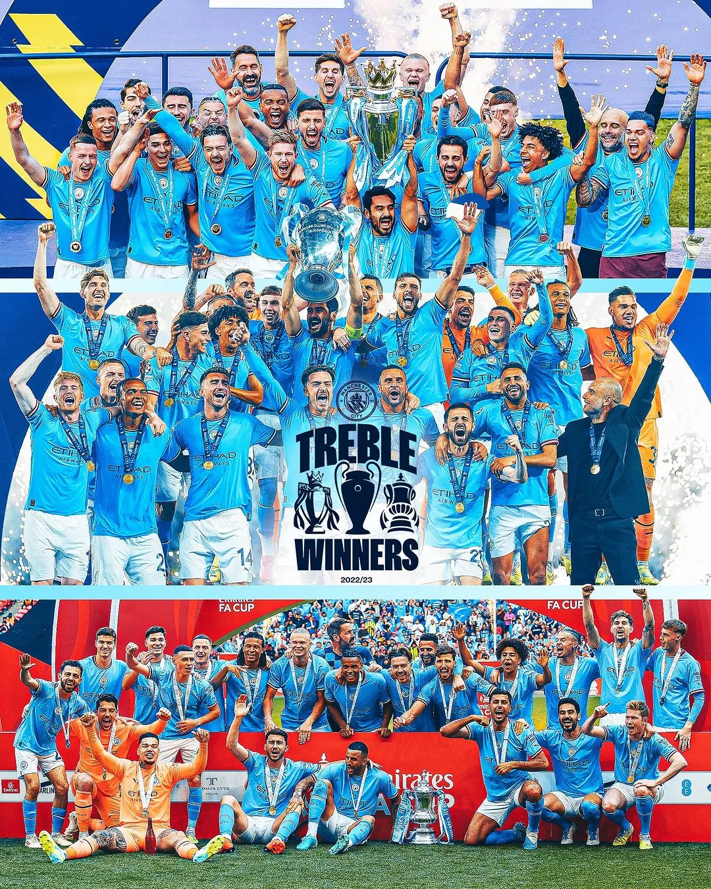

| Manchester City FC |  | |
|---|---|---|
| 소속 리그 | 프리미어 리그 (Premier League) | |
| 구단 창설 | 1880년 | |
| 연고지 | 노스웨스트 잉글랜드 그레이터맨체스터 주 맨체스터 | |
| 홈 구장 | 에티하드 스타디움 (Ethihad Stadium) | |
| 감독 | 펩 과르디올라 | |
| 주장 | 일카이 귄도안 | |
| 구단주 | 만수르 빈 자이드 알나얀 | |
1880년, 잉글랜드 맨체스터의 고튼 서부에 위치한 세인트 마크스 교회 교인들은 인도적인 목적으로 맨체스터 시티 축구 클럽을 창단했습니다. 당시 고튼 지역은 많은 실업자와 범죄자로 인해 문제가 있었는데, 교회 관리인 윌리엄 비스토우, 토마스 굿비히어, 그리고 아서 코넬 목사의 딸 안나 코넬은 이 문제를 해결하고 사회적 문제를 개선하기 위해 세인트 마크스 웨스트 고튼 축구 팀을 창단했습니다.
1894년에 팀 이름을 맨체스터 시티 FC로 변경하였고, 1898-99 시즌에 1부 리그로 승격하였으나, 다시 2시즌도 안 되어 강등되었습니다. 그 이후 1시즌 만에 승격을 차지하였고, 1903-04 시즌에는 FA 컵 우승과 리그 2위의 성적을 달성하여 이름을 알렸지만, 그 후에도 강등과 승격을 반복하여 중소 구단으로서 지내야 했습니다. 그리고 1923년에 홈구장인 하이드 로드가 불에 타서 경기장을 메인 로드로 이전하였습니다.
1925-26 시즌에는 감독 없이 FA 컵 우승을 차지하고, 맨체스터 유나이티드를 원정에서 6-1로 이기는 등 성과를 거두었지만, 그에도 불구하고 강등되었습니다. 1928년에는 최고의 서포터를 가진 클럽으로 선정되었고, 1934년에는 FA 컵 우승을 차지하였습니다. 그리고 맨체스터 유나이티드가 첫 번째 1부 리그 우승(1907-08 시즌)을 거두고 지난 30년 동안을 보내던 1936-37 시즌에서 맨체스터 시티도 첫 번째 1부 리그 우승을 차지하였습니다. 그러나 1937-38 시즌에는 공격력이 42경기에서 80골을 넣을 정도로 강력했지만, 수비진의 약점으로 인해 77실점을 허용하여 강등되었습니다. 결국 맨체스터 시티는 현재까지도 강등된 챔피언 팀으로서 유일하며, 실점보다 높은 득점(+3)을 기록하고 강등한 유일한 팀입니다. 이후 1951년에는 독일 출신의 골키퍼인 베르트 트라우트만을 전격 영입하고 수비를 강화함으로써 다시 상승하기 시작했습니다.
1965년에 조 머서와 말콤 앨리슨이 맨체스터 시티에 부임하며 클럽은 큰 변화를 겪습니다.
조 머서 감독의 지휘 아래 앨리슨은 강력한 공격진을 구축하고, 4년 동안 1부 리그 승격, 리그 우승, FA컵 우승, 풋볼 리그 컵 우승,
UEFA 컵 위너스컵 우승 등을 차지합니다. 이는 맨체스터 시티의 역사상 큰 성과입니다.
맨체스터 시티는 1970년대에는 약간의 영광과 불안한 시기를 겪었습니다. 조 머서와 앨리슨의 떠남 이후 큰 성과는 없었으나 1975-76 시즌에 풋볼 리그 컵을 우승했습니다.
1980년대에는 성적은 미약했지만 관중 수와 인기는 유지되었으며, 톱티어 리그에서 중상위권에 속하는 안정적인 팀으로 평가받았습니다.
전체적으로 맨체스터 시티는 그 시기에 안정성과 인기를 갖춘 클럽이었습니다.
1992-93 시즌 이후 맨시티는 맨유의 프리미어 리그 지배와는 달리 쇠락을 겪었습니다. 피터 스웨일스 회장은 1994년에 사임하고, 프랜시스 리가 그 자리를 대체했습니다. 그러나 팀 경영은 악화되어 2부 리그로 강등되었고, 더 나아가 3부 리그까지 추락하였습니다. 1999년에는 다시 2부 리그로 승격하였지만 한 시즌 만에 프리미어 리그에서 강등되었습니다. 이후 맨시티는 유럽 축구 변방과 제3세계에서 젊은 선수들을 영입해 전력을 보강하고 2002-03 시즌에 프리미어 리그로 승격하였으나 하위권에서 지속적으로 호흡하며 애로를 겪었습니다. 2003년에는 메인 로드를 떠나 새 구장인 시티 오브 맨체스터 스타디움으로 이전하였습니다. 리그 성적은 안정되지 않았고, 2007년에는 강등을 피하기 위해 피어스 감독이 쫓겨났습니다.
2007년, 전 태국 총리인 탁신 친나왓이 맨체스터 시티를 인수하여 자신의 이미지를 높이려 했습니다. 그러나 이전에 리버풀을 인수하려다 실패한 경험이 있어 맨시티 팬들의 반응은 좋지 않았습니다. 탁신은 돈을 들여 감독과 선수들을 영입하였고, 팀은 좋은 출발을 하였으나 성적이 좋지 않아 최종적으로 리그에서 9위로 마무리했습니다. 그 후 탁신은 감독을 경질하고 구단을 팔게 되었습니다 . 한국에서는 쑨지하이가 맨시티에서 활약한 주요 선수로 알려져 있었으며, 조이 바튼과 마르크비비앙 푀 등 다른 선수들도 여러 사건과 연관되어 언급되었습니다.
2008년 9월. 프리미어 리그 축구팀 맨체스터 시티 FC는 만수르를 구단주로 맞이한다. 초기에는 구단 인수에 대한 여론이 좋지 않았으며, 돈만 뿌리는 구단주로 비판받기도 했다. 그러나 만수르는 구단에 대한 투자와 애정을 보여주며 체계적인 발전 계획을 공개하면서 다른 구단 서포터들의 지지를 얻었다. 그는 팬들을 배려하기 위해 경기장 근처에 펍을 구입하고 음식과 히터를 제공하는 등 팬들을 위한 다양한 조치를 취했다. 그리고 선수 영입은 감독에게 맡기고 구단주 역할에 충실한 모습을 보였다. 이로써 맨체스터 시티는 만수르의 투자와 지원을 통해 성적을 향상시켜 현재의 강팀으로 성장했다. 만수르의 행보는 맨유의 글레이저 가문이 맨유를 돈벌이에 활용하는 모습과 대비된다. 맨시티는 우승을 많이 거두면서 팬들의 절대적인 지지를 받고 있으며, 훈련 시설과 클럽 하우스는 세계 최고 수준이다. 또한 맨시티의 유스 시스템도 발전하여 유망한 선수들을 배출하고 있다 . 10년 동안 리그에서 가장 많은 우승을 거둔 맨시티는 2022-23시즌에 리그, FA컵, 그리고 챔피언스리그에서 우승을 차지하여 구단 최초로 트레블을 달성했다. 이는 1999년 맨유가 트레블 우승을 달성한 이후로 프리미어리그 팀으로는 24년 만에 두 번째로 이루어진 기록이다. 이로써 맨시티는 클럽 월드컵에도 처음으로 진출하게 되었다.